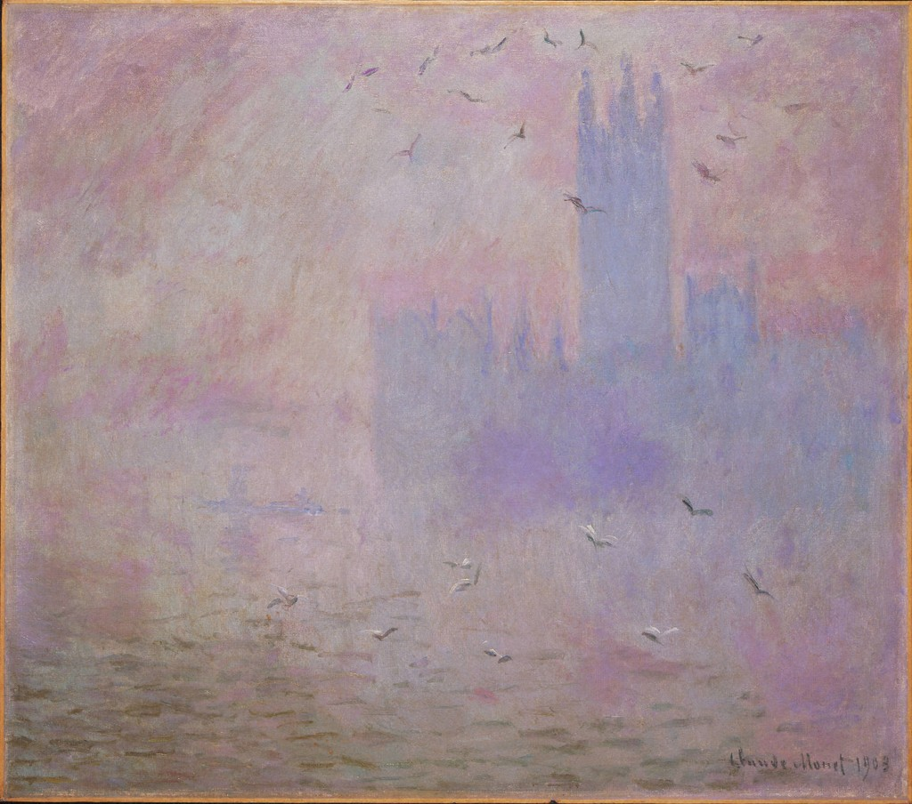

Grace Guan
%%%% [at] stanford [dot] edu where %%%% is gzguan
hello!
I am a first year PhD student at
Management Science and Engineering
at Stanford, advised by Prof.
Margaret Brandeau
. Before coming to Stanford, I studied
Computer Science
with minors in
Global Health & Health Policy
and
Statistics & Machine Learning
at Princeton. I formerly interned at
Columbia Business School
,
DeepMind Health
,
Google
, and
Two Sigma
.
research
I'm currently interested in researching ways to improve the quality of patient care, both at the population health level and at the clinical level. My Google Scholar is
here
, and my CV is
here
.
other projects
Stretch Reminder Chrome Extension
(
beta test version
) (500+ daily users!)

Copyright Grace Guan, 2016-